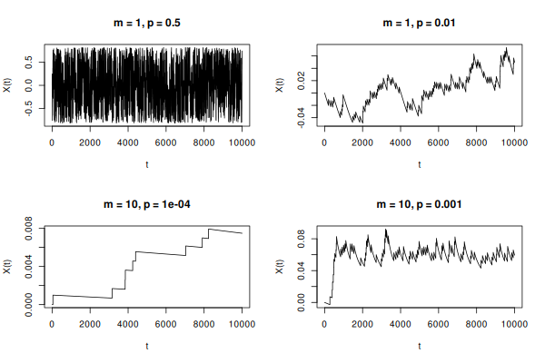

Répondez aux questions dans un nouveau fichier solution.R.
N’hésitez pas à consulter la documentation de R!
Soit le processus stochastique \left\{ X_t \right\}_{t \in \mathbb N} défini par X_0 = 0 et X_t = \tg^{-1} \left( X_{t - 1} + m p Y_t - m p^2 \right) où les Y_t sont des variables aléatoires Binomiales(m, p) indépendantes. Implémentez les fonctions suivantes:
w_for(n, m = 1, p = 0.5) qui simule une trajectoire
de longueur n de ce processus en
utilisant une boucle for;
w_vec(n, m = 1, p = 0.5) qui simule une trajectoire
de longueur n de ce processus sans
utiliser de boucle for.
La légende raconte que le code de celui qui lit bien la documentation sera court!
Quelque réalisations pour référence: 